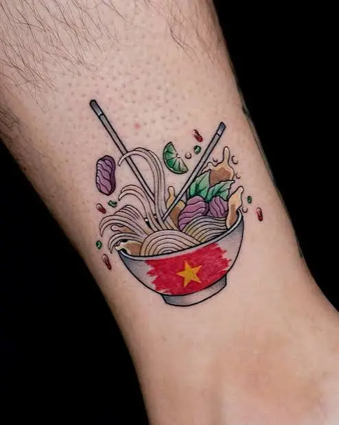

Hanoi Tastes Like Memory
Wake up early in Hanoi's Old Quarter and you will hear it before you see it. Motorbikes hum. Spoons clink against bowls. Somewhere, a vendor calls out over the sizzle of a hot pan. The air smells of charcoal, broth, herbs and fresh coffee.
Here, food is more than a meal. It is culture, family and history, passed from one generation to the next. Every dish tells a small story about the city.
This guide gathers the dishes every visitor should try, with real places to find them, mostly within walking distance of Hoan Kiem Lake. Bring an empty stomach and a little curiosity.
Morning: Start Slow, Start Warm
1. Phở: The Soul of Hanoi

Northern-style phở uses wide, soft rice noodles and a clear, deep broth made from slow-simmered bones. Add green onions and fresh herbs, and you have the city's most famous breakfast.
Where to try it:
- Phở Gia Truyền – 49 Bát Đàn
- Phở Vui – 25 Hàng Giấy
2. Bánh Mì: Cheap, Crispy, Unforgettable

Hanoi's bánh mì comes with creative fillings like grilled pork, fried eggs, sausage and pâté. Prices usually range from about 20,000 to 60,000 VND.
Where to try it:
- Bánh Mì Dân Tổ – at the corner of Cao Thắng and Trần Nhật Duật. It sells only from about 3:00 to 7:00 AM, so go early!
3. Egg Coffee at Café Giảng

Imagine bitter coffee topped with a cloud of sweet, creamy whipped egg. It sounds strange, but it tastes like dessert. Order it hot for the full effect.
Where to try it:
- Café Giảng – Alley 39 Nguyễn Hữu Huân
4. Bánh Cuốn: Thin, Soft and Light

These delicate steamed rice rolls are filled with minced pork and fried shallots, then dipped in mild fish sauce. Light, simple and perfect for a gentle start.
Where to try it:
- Bánh Cuốn Gia Truyền Thanh Vân – 12–14 Hàng Gà
Midday: The Dishes Hanoi Is Famous For
5. Bún Chả: Grilled, Smoky, Perfect

Small pork patties are grilled over charcoal and served in a sweet-sour dipping broth, with fresh noodles and herbs on the side. If you only try one dish, make it this one.
Where to try it:
- Bún Chả Đắc Kim – 1 Hàng Mành
- Bún Chả Cửa Đông – 41 Cửa Đông
6. Chả Cá: Fish with Dill

Hanoi's famous fish dish is marinated, fried, and served with a generous handful of fresh dill, spring onions, noodles and shrimp paste.
Where to try it:
- Chả Cá Thăng Long – 21 Đường Thành
7. Bún Thang: Elegant and Delicate

This is Hanoi's most refined noodle soup. Over 20 ingredients, including shredded chicken, thin egg strips, ham and mushrooms, are arranged like a small work of art in a sweet, clear broth.
Where to try it:
- Bún Thang Cầu Gỗ – 48 Cầu Gỗ
- Bún Thang Hàng Hành – 29 Hàng Hành
8. Bún Ốc: A Tangy Local Favorite

Snail noodle soup has a light, slightly sour tomato broth, fresh herbs and chili. Adventurous eaters love it.
Where to try it:
- Bún Ốc Giang – 36 Lương Ngọc Quyến
9. Autumn Special: Chả Rươi

Visiting between autumn and winter? Look for chả rươi, a seasonal patty made with rươi (a rare, prized ingredient), pork, egg, dill and tangerine peel. It is best eaten hot on a cool, windy day.
Where to try it:
- Chả Rươi Hưng Thịnh – 1 Hàng Chiếu
- Chả Rươi Gia Ngư – 25 Gia Ngư
Afternoon: Sweet Little Treats
10. Kem Tràng Tiền

This classic ice cream shop is a childhood memory for many Hanoians. Try flavors like young rice (cốm), coconut, mung bean or cocoa, then stroll around the lake.
Where to try it:
- Kem Tràng Tiền – 35 Tràng Tiền
11. Chè Khúc Bạch

A cool, silky dessert with soft white jelly pieces and a gentle grapefruit-blossom aroma. It is refreshing and not too sweet.
Where to try it:
- Chè Khúc Bạch Linh Linh – 12 Đường Thành
A Few Simple Tips
- Go early. Many famous places sell out or close in the afternoon.
- Try one dish at a time. Share plates and taste more.
- Be brave with herbs and dipping sauces. They are part of the experience.
- Ask a local. Hanoians love to talk about food!
- Check opening hours. Some small shops change their schedule.
Take Hanoi Home: A Tattoo That Tastes Like Your Trip
A good meal fades. A photo gets buried in your phone. But a small tattoo stays with you for life.
At Mr Tattoo Hanoi Studio, right in the heart of the Old Quarter, we help travelers turn their Vietnam story into skin-deep art. You do not need a big piece. A small tattoo to remember your trip starts from just $10.

Here are some ideas inspired by this food journey:
- A steaming bowl of phở in delicate fine-line style
- A tiny egg-coffee cup to remember your morning ritual
- Chopsticks and a bowl for the meals you shared
- A conical hat or lotus flower, classic symbols of Vietnam
- The word "Hanoi" or the date of your trip in elegant lettering
- A mini Old Quarter street scene in blackwork
We specialize in custom, one-of-a-kind designs, traditional Vietnamese motifs, Asian-inspired art, fine-line, blackwork and travel memory tattoos. Tell us your story and we will design something that is truly yours.
Book Your Souvenir
Finish your food walk with a different kind of souvenir. Our studio is close to many of the places in this guide.
- Website: mrtattoo.vn
- Contact page: mrtattoo.vn/contact/
- Hotline / WhatsApp: +84 377 616 886
Eat well. Walk slowly. Keep Hanoi forever.